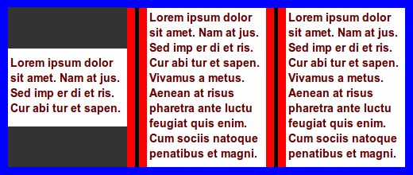
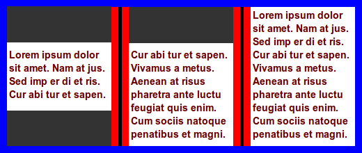
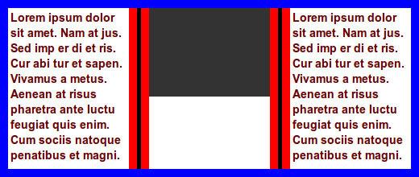
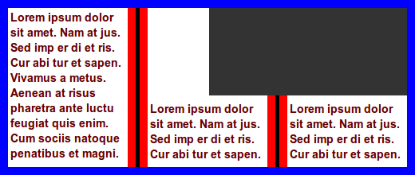
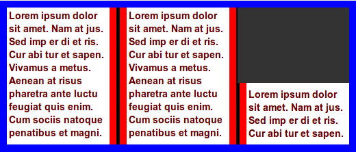
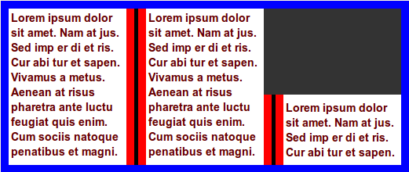
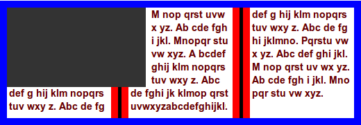
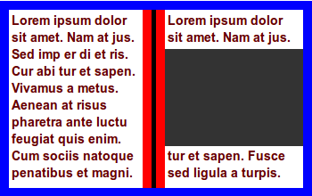
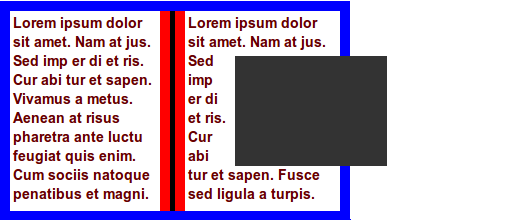
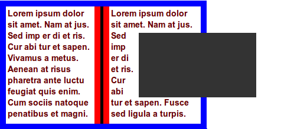

Abstract
This specification describes how common figures ‐ as in tables, photographs, or drawings with captions ‐ can be formatted with CSS in ways traditionally used in printing. Using functionality from this specification, figures can be floated wrt. columns and pages, and they can be made to span columns. One can also specify that text should wrap around text and images.
Status
This specification is in the process of establishing itself in WHATWG. As such, the term "Living Standard" indicates a goal, rather than reality. However, many features described in this specification have already been implemented, as documented here
Table of Contents
- Goals
- 1 Conformance
- 2 Page floats
- 2.1 Floating to the top/bottom: 'float'
- 2.2 Snapping to nearest edge: snap()
- 2.3 Setting the page float reference: 'float-reference'
- 2.4 Deferring page floats
- 2.4.1 'float-defer-column'
- 2.4.2 'float-defer-page'
- 2.4.3 'float-defer-line'
- 2.5 Clearing page floats
- 2.6 Avoiding content after page floats
- 2.7 Overconstrained page floats
- 3 Extending floats
- 3.1 Floating inside and outside pages
- 3.2 float-offset
- 3.3 Spanning columns: 'column-span'
- 4 Combo floats
- 4.1 Page float policy
- 5 Wrapping around page floats (and other elements)
- 5.1 wrap-side
- 5.2 wrap-contrast
- 6 Pullquotes
- References
- Acknowledgments
Goals
The main goal of this specification is to enable authors to create publications — on paper, on screens, and in PDLs — that present figures in common ways.
All diagrams, examples, and notes in this specification are
non-normative, as are all sections explicitly marked non-normative.
Everything else in this specification is normative.
The key words "MUST", "MUST NOT", "REQUIRED", "SHOULD", "SHOULD NOT", "RECOMMENDED", "MAY", and
"OPTIONAL" in the normative parts of this specification are to be
interpreted as described in RFC2119. For readability, these words do
not appear in all uppercase letters in this specification.
[RFC2119]
Conformance requirements phrased as algorithms or specific steps
may be implemented in any manner, so long as the end result is
equivalent.
User agents may impose
implementation-specific limits on otherwise unconstrained inputs,
e.g. to prevent denial of service attacks, to guard against running
out of memory, or to work around platform-specific limitations.
2 Page floats
In page-based layouts, images and figures are often displayed at
the top or bottom of pages, spanning several columns. This
specification extends the CSS float model with page floats,
which are floats that primarily move in the block direction, as
opposed to normal CSS float that primarily move in the inline
direcdtion. The 'float' property is used to specify that the page
float should move to the top, bottom or to the nearest edge of the
column.
By default, page floats are contained by their natural column,
i.e., the column where the element would naturally start. All visible
elements have at least one column. Elements that are split over
several pages will have several columns, and multicol elements can
have several columns on the same page. Columns exist in both paged and
continous media, and page floats can therefore also be used in
scrolled enviroments.
The page float's conataining block can be extended by the
'column-span' property. A typical use case is to make the page float
span two columns, but parts of columns or column gaps can also be
specified.
Page floats can be told to escape their natural column by
using the 'float-reference' property to set the containing block to
be an element, the page area, or the bleed box.
Another way to escape the natural column is to defer placement to a
later column, perhaps on a lager page, by using the
'float-defer-column' and 'float-defer-page' properties. These
properties identify a page float's defer column on a defer
page.
Like for normal floats, elements can be set to clear page floats
through 'clear: column'.
These properties allow rich designs to be described. However, there
may be implementation-specific limits for figure placement (such that
figures cannot affect content that has already been laid out), or that
blank pages should be avoided. In these cases, UAs may move the page
float to another column or page. The column where the page float is
shown is called the resulting column, and the page where
the page float is shown is called the resulting page.
2.1 Floating to the top/bottom: 'float'
These new keywords on 'float' have been added:
- top
- The page float is moved to the top of its column, i.e., to the beginning (in the block direction) of its defer column. If other page floats have already taken the top position, the float is stacked below or moved to the top of another column (see Clearing Page floats below).
- block-start
- alias for 'top' (should 'before' also be an alias?)
- bottom
- The page float is moved to the bottom of its column, i.e., to the end (in the block direction) of its defer column. If other page floats have already taken the bottom position, the float is stacked above or moved to the bottom of another column (see Clearing Page floats below).
- block-end
- alias for 'bottom' (should 'after' also be an alias?)
- top-bottom
- The page float is moved to the top of its column, i.e., to the beginning (in the block direction) of its defer column. If that position is not possible (due to 'column: clear' being set, or due to lack of space), other possibilities are tried in order: the bottom of its column, the top of the next column, the bottom of the next column, etc.
- block-start-end
- alias for 'top-bottom'
- bottom-top
- The page float is moved to the bottom of its column, i.e., to the end (in the block direction) of its defer column. If that position is not possible (due to 'column: clear' being set, or due to lack of space), other possibilities are tried in order: the bottom of its column, the top of the next column, the bottom of the next column, etc.
- block-end-start
- alias for 'bottom-top'
When one of these keywords are set, a page float is created.
In this example, the figure is floated to the top of its column:
figure { float: top }

The column is, by default, the containing block of the page float.
When the width is auto, the page float will fill the width of the
column. When the width is constrained, content will be laid out in the
inline direction. No other content is allowed to run around the page
float.
In this example, the width of the figure is constrained and its width computed relative to the column width.
figure { float: top; width: 50% }

The margin of the page float extreme edge (i.e., the edge of the page float that ends up adjoining the column edge) is always set to zero, so that page floats align with content in other columns.
In the future, other content may be allowed to run around page floats.
2.2 Snapping to nearest edge: snap()
Figures that naturally end up close to a column break may look better when moved to the top or bottom of the column. To support this, the snap value is added to the 'float' property:
- snap(<length> <length>? [, top | bottom | near ]?)
- Turns the element into a page float if it naturally appears within a certain distance from the top or bottom of the column. The optional length value(s) specifies the maxium distance from the top/bottom that an element must be within in order to become a page float. When one length value is specified, it represents distance from both the top and the bottom; when two length values are specified, they represen the distance from top and bottom, respectively. Integer values represent number of lines in the baseline grid, if set. If no baseline grid is set, integer values represent multiples of the used value of 'line-height' on the element itself.
The optional keyword value specifies where the element is floated: top, bottom, or the nearest of the two. The default value is 'near'. If 'near' is in effect and the element is within the specified distance both from the top and the bottom, bottom wins.
- snap
- same as
snap(2, near)
Should an element be considered to be a float if it has a snap() value, even if the element does not appear within the specified distance? This way, it can be determined whether an element is float or not without laying out the document.
In this example, a figure naturally appears close to a column break. There is not enough space for the figure in the first column, and it is therefore placed in the second column, leaving white space at the bottom of the first column.

To avoid the white space, the image can be floated to the nearest edge (in the block direction):
.figure { float: snap }
In this example, the figure is already at the nearest edge, so it does not move. However, page floats allow subsequent content to be displayed before the page float and the white space can therefore be filled:
In this example, two figures naturally appear in the text flow:

A typographer would typically try to avoid single lines of text above/below figures, which can be achieved with:
div.figure { float: snap(1) }
The length value specifies the reach of the snap function; in this example the second figure is affected, but not the first.
In this example, two figures naturally appear in the text flow:
To make both figures snap to the nearest edges, this code can be applied:
div.figure { float: snap(3em) }
The resultant rendering is:

In this example, two figures naturally appear in the text flow:
To make both figures snap to the nearest edges, this code can be applied:
div.figure { float: snap(3, bottom) }
The resultant rendering is:

To determine the exact meaning of 'near', the Japanese layout requirements document should be consulted.
2.3 Setting the page float reference: 'float-reference'
Normally, page floats are moved to the top or bottom of a column, and the column is the contaning block of the page float, called a float reference. In some cases it is necessary to change the float reference to be an element, the page area, or the bleed box. This is possible with the 'float-reference' property.
| Name:
| float-reference
|
| Value:
| column | element | page | bleed-box
|
| Initial:
| column
|
| Applies to:
| page floats
|
| Inherited:
| no
|
| Percentages:
| N/A
|
| Media:
| visual
|
| Computed value:
| Same as specified value
|
This property indicates the float reference for a page float. The values are:
- column
- the resulting column is the float reference
- element
- the float reference is the youngest acestor element that creates a block formatting context
- page
- the page area of the resulting page is the float reference
- bleed-box
- The bleed box of the resulting page is the float reference. The extent of the bleed box is described by the bleed property.
In this example, the footer is floated to the bottom of the page:
footer { float: bottom; float-reference: page }
<article>
...
<footer>...</footer>
</article>
The resultant rendering could be:
┌──────────┬┬──────────┬┬──────────┐
│ ││ ││ │
│ column 1 ││ column 2 ││ column 3 │
│ ││ ││ │
├──────────┴┴──────────┴┴──────────┤
│ │
│ blank area │<-page box
│ │
├──────────────────────────────────┤
│ footer │
└──────────────────────────────────┘
Column rules are not displayed in areas described by 'column-span'.
In this example, the footer is floated to the bottom of the column, and is set to span all columns:
footer { float: bottom; float-reference: column; column-span: all }
<article>
...
<footer>...</footer>
</article>
The resultant rendering could be:
┌──────────────────────────────────────┐
│ ┌──────────┬┬┬─────────┬┬┬─────────┐ │
│ │ │││ │││ │ │
│ │ 1 │││ 2 │││ 3 │ │
│ │ │││ │││ │ │
│ ├──────────┴┴┴─────────┴┴┴─────────┤ │
│ │ footer │ │
│ ╘══════════════════════════════════╛ │
│ │
│ │
│ │
└──────────────────────────────────────┘
The double line below the footer indicates that the columns stretch to below the footer element. Note that column rules are not displayed under the area described by column spans.
In this example, the article element acts as the float reference:
footer { float: bottom; float-reference: element }
article { columns: 3 }
<article>
...
<footer>...</footer>
</article>
In the resultant rendering, the footer is shown after the
columns on the last page of the article element:
┌──────────────────────────────────────┐
│ ┌──────────┐┌──────────┐┌──────────┐ │
│ │ ││ ││ │ │
│ │ 1 ││ 2 ││ 3 │ │
│ │ ││ ││ │ │
│ ├──────────┴┴──────────┴┴──────────┤ │
│ │ footer │ │
│ ╘══════════════════════════════════╛ │
│ │
│ │
│ │
└──────────────────────────────────────┘
In this example, the full-page ad uses the bleed box as the referece. Thus, when the image width and height are set to 100%, the image will extend slightly outside the page box on all sides. Exactly how much depends on the value of the bleed property.
aside.top-ad {
float: top;
float-reference: bleed-box;
float-defer-page: 3;
}
aside.top-ad img {
width: 100%; height: 100%;
object-fill: fill;
}
<aside class=full-page-ad>
<img>
</aside>
In this example, a figure fills the upper half of the page to its bleeding edge.
In the rendering below, the stippled line indicates the bleed box, the green rectangle is the aside element which is aligned with the bleed box on the top, right and left. The black solid line is the page box.
┌──────────────────────────────────────────┐
│ │
│ │
│ │
│ │
│ │
│ │
│ │
└──────────────────────────────────────────┘
│ │ │ │
│ │
│ │ │ │
│ │
│ │ │ │
└──────────────────────────────────────┘
└ ── ── ── ── ── ── ── ── ── ── ┘
2.4 Deferring page floats
A page float can be deferred to a following column or page with two
new properties described in this section. After applying these
properties, the page float's defer column is identified.
These properties are evaluated before the 'clear' property.
2.4.1 'float-defer-column'
| Name:
| float-defer-column
|
| Value:
| none | <integer> | last
|
| Initial:
| none
|
| Applies to:
| page floats
|
| Inherited:
| no
|
| Percentages:
| N/A
|
| Media:
| visual
|
| Computed value:
| specified value
|
This property specifies a defer column, which is a later column where the formatter will try to place the page float. Values are:
- none
- the natural column is the defer column
- <integer>
- A positive integer indicates that the page float is deferred by the specified number of columns. If the number results in column that does not exist, the last column should be attempted. A negative integer indicates that the page float is deferred by counting from the last column; -1 means the last column, -2 means the next-to-last column, etc. If the specified negative integer would result the defer column being a previous column, the value is ignored. Also, zero is ignored.
- last
- The last column on the natural page becomes the defer column.
2.4.2 'float-defer-page'
| Name:
| float-defer-page
|
| Value:
| [ <integer> || last || [left | right] ] | none
|
| Initial:
| none
|
| Applies to:
| page floats
|
| Inherited:
| no
|
| Percentages:
| N/A
|
| Media:
| visual
|
| Computed value:
| specified value
|
This property specifies a defer page, which is a later column where the formatter will try to place the page float. Values are:
- none
- the defer page is the natural page
- <integer>
- A positive integer indicates that the page float is deferred by the specified number of pages. A negative integer indicates that the page float is deferred by counting from the last page; -1 means the last page, -2 means the next-to-last page, etc. If the specified negative integer would result the defer page being a page column, the value is ignored. Also, zero is ignored.
Should negative values be allowed?
- left
- A left page is requested. If pages are not categorized as left of right, this value is ignored. In combination with an integer, this keyword has the effect that the defer page is increased by one, unless the integer value results in a left page.
- right
- A left page is requested. If pages are not categorized as left of right, this value is ignored. In combination with an integer, this keyword has the effect that the defer page is increased by one, unless the integer value results in a right page.
- last
- The last page becomes the defer page. In combination with 'left', this value means next-to-last unless the last page is a left page. In combination with 'right', this value means next-to-last unless the last page is a right page.
Float figure to the top of the column that follows the natural column:
figure { float: top }
figure { float-defer-column: 1 }
Float figure to the top of the next-to-last column:
figure { float: top; float-defer-column: -1 }
Float figure to top of the last column of the multicol element on the current page:
figure { float: top; float-defer-column: last }

In combination with 'column-span', the figure is floated to the top corner of the multicol element on that page:
figure { float: top; column-span: 2; float-defer-column: last }

Float figure to the second column on the next page, spanning two columns:
figure {
float: top;
column-span: 2;
float-defer-page: 1;
float-defer-column: 1;
}
The next page may look like this:

Float figure to the top right, leaving the last column unchanged:
figure {
float: top;
column-span: 2;
float-defer-column: -1;
}
Given that there are four columns, and that the figure is referenced at the beginning of its multicol element, the same layout could be achieved with this code:
figure {
float: top;
column-span: 2;
float-defer-column: 1;
}
Float figure to the top of the first column on the next-to-last page:
figure { float: top }
figure { float-defer-page: -1 }
Float figure to the top of the next-to-last column on the next-to-last page:
figure { float: top }
figure { float-defer-column: -1 }
figure { float-defer-page: -1 }
Float figure to the top of the last column on the natural page:
.figure { float: top }
.figure { float-defer-column: last }
Float figure to the last column on the last page:
.figure { float: top }
.figure { float-defer-column: last }
.figure { float-defer-page: last }
2.4.3 'float-defer-line'
| Name:
| float-defer-line
|
| Value:
| none | <integer> | <percentage>
|
| Initial:
| none
|
| Applies to:
| page floats
|
| Inherited:
| no
|
| Percentages:
| relative to height of column
|
| Media:
| visual
|
| Computed value:
| specified value
|
.pullquote {
float: top outside;
float-defer-column: last;
float-defer-line: 50%;
float-offset: -50%;
}
2.5 Clearing page floats
Elements may request to clear page floats with the 'clear' property:
- column
- The page float requests to be the first page float at its favored position in the column; rather than being stacked after other page floats, it should be moved to the next possible position.
- page
- The page float requests to be the first page float on the page. If there is already another page float on the page, the page float is moved to the next page.
The placement process is iterative; if the requested position cannot be honored, the page float the next possible position is tried, etc.
In this example, the two figures may appear in the same column:
figure { float: bottom; clear: none }
<figure></figure>
<figure></figure>

The first figure will appear at the bottom of the column, the second will appear above the first.
In this example, the two figures will appear in different columns:
figure { float: bottom; clear: column }
<figure>...</figure>
<figure>...</figure>
In this example, the first figure will move to the top of its natural column, while the second will move to the bottom:
figure { float: top-bottom; clear: column }
<figure>...</figure>
<figure>...</figure>

The placement of the second float is due to the 'top-bottom' indicating that the bottom as an acceptable position, and due to it being the first page float in the bottom position.
In this example there are three figures, all requesting to be the first page float in their favored position. The first figure will move to the top of its natural column, the second will move to the next-best position, which is the bottom of the natural column. The third-best position is the top of the next column, which is where the third figure will be placed.
figure { float: top-bottom; clear: column }
<figure>...</figure>
<figure>...</figure>
<figure>...</figure>

In this example, the two figures will appear in different columns due to clearing:
figure { float: bottom; clear: column }
<figure>...</figure>
<figure>...</figure>
In this example, the two figures end up the top corner of two different pages due to clear being set, and that 'last' has effect on all pages:
figure { float: top; float-defer-column: last; clear: column }
<figure>...</figure>
<figure>...</figure>
2.6 Avoiding content after page floats
Page floats can request that subsequent content is avoided by
setting margin values in the block direction to 'auto'.
img {
float: top;
margin-bottom: auto;
}

2.7 Overconstrained page floats
The properties described above allow rich designs to be described.
However, in many cases page floats must be moved to another column or
page than specified. This may be due to implementation-specific limits
for figure placement (such that figures cannot affect content that has
already been laid out), or that there simply isn't room in the column
specified. UAs are free to find the best resulting column and page.
When resolving over-constrained layouts, the order of importance for defined goals are:
- honor basic multi-column layout ('columns', 'column-span: all', 'column-gap' etc)
- avoid overlapping content; rather, move the page float to the next possible position
- honor 'column-span: <integer>'
- honor 'float-defer-page'
- honor 'float-defer-column'
- honor 'clear: column'
- honor 'float: top/bottom/top-bottom/bottom-top/clear'
- display all content (as described by other CSS properties)
- keep the number of pages to a minimum
- place the page float as close to its natural position as possible
- display content in the document order
- avoid pages with only page floats
The number of columns is limited, and high values therefore cannot be honored. As a result, the last column on the natural page is tried instead.
.figure { float: top; float-defer-column: 1000 }
A narrow screen may only have room for one column, in which case this request cannot be honored. As a result, the natural column should be tried instead.
.figure { float: top; float-defer-column: -5 }
In long documents with many paragraphs, all paragraphs will not fit on the last page. Therefore, the last declaration in this example cannot be honored and must be ignored:
p { float: top; float-defer-page: last }
Consider this code:
.one { float: top; float-defer-page: last; column-span: all }
.two { float: top; clear: column }
<div class=one></div>
<div class=two></div>
If all content fits on one page, the first page will also be the last page. The first element is processed first and is placed on top of the first/last page. Then the second element is processed. It requests a clear top, something which is not possible on the first page. Therefore, a second page is created and the second element is moved there, while the first element remains on the first page. Thus, even if the first element requests to be on the last page, it will not appear there.
3 Extending floats
3.1 Floating inside and outside pages
To allow content to flow to the inside and outside of a page, two new keywords are added to the 'float' property:
- inside
- On a right page, this value is synonymous with 'left'. On a left page, this value is synonymous with 'right'.
- outside
- On a left page, this value is synonymous with 'left', On a right page, this value is synonymous with 'right'.
These new values do not create page floats, the are simply aliases for 'left' and 'right'.
.figure { float: outside }
Should there be a way to combine float: top/bottom with left/right?
From here on, the spec is quite experimental. There be devils in details.
3.2 float-offset
float: outside;
float-offset: -3em;
3.3 Spanning columns: 'column-span'
This specification adds number, length, and the 'auto' value to the
'column-span' property so that elements can span several columns. The
new definition is:
| Name:
| column-span
|
| Value:
| none | all | <number> | <length> | auto
|
| Initial:
| none
|
| Applies to:
| in-flow block-level elements
|
| Inherited:
| no
|
| Percentages:
| N/A
|
| Media:
| visual
|
| Computed value:
| Same as specified value
|
This property describes how many columns the element spans in the nearest multicol ancestor in the same block formatting context. These values only apply to page floats.
- none
- the element does not span multiple columns.
- all
- the element spans across all columns.
- <number>
- The page float spans across the number of columns specified. If a decimal number is specified, the fraction indicates how much of the next column gap and/or the next column which is to be spanned; a fraction up to 0.5 indicates a linear fraction of the column gap, while a fraction between 0.5 and 1.0 indicate the column gap plut a linear fraction of the next column.
- <length>
- the length value determins how many columns the page float will span, rounding upwards to an integer number of columns
- auto
- the intrinsic width of the page float determines how many columns it will span, rounding upwards to an integer number of columns
If the resulting number of columns is equal to, or larger than the number of columns in the multicol element, the number of columns spanned will be the same as if 'column-span: all' had been specified.
In the line direction, the rectangle described by this property is, by default, placed at the start of the resulting column, extending in the line direction. However, the rectangle will not normally extend outside the content box of the multicol element. Instead, the rectangle extended in the opposite line direction. (Negative margins and/or 'float-offet' may possibly move the page float outside the content box.)
In this example, the defer column is the last column on the page. Due to the setting on 'column-span' the page float also covers another column. As it cannot extend outside the content box of the multicol element, it must extend to the left into column 2.
img {
float: top;
column-span: 2;
float-defer-column: last;
}
Here is a possible rendering:
This example is a variation of the previous example, showing how the page float grows in the oppsite of the line direction.
img {
float: top;
column-span: 1.75;
float-defer-column: last;
}
Here is a possible rendering:

Float figure to top of its column, spanning all columns:
.figure { float: top; column-span: all }

figure {
float: top;
float-defer-column: last;
column-span: 1.25;
}

figure {
float: top;
float-defer-column: last;
column-span: 1.5;
}

4 Combo floats
Page floats are floats that primarily move in the block direction,
while normal float primarily move in the line direction. By setting
two keywords, floats can be set to move in both directions. These are
called combo floats.
Syntax: [ top | bottom | top-bottom | bottom-top | snap() ] || [ left | right | inside | outside ]
4.1 Page float policy
| Name:
| float-policy
|
| Value:
| normal | not-last
|
| Initial:
| normal
|
| Applies to:
| page floats
|
| Inherited:
| no
|
| Percentages:
| N/A
|
| Media:
| visual
|
| Computed value:
| specified value
|
Values are:
- normal
- nothing special
- not-last
- treat element as if 'display: none' had been set if its resultant column appears after all other content in the normal flow of the multicol element.
Only show pullquotes that appear with other content; we don't want a stack of pullquotes at the end of an article.
.pullquote {
float: top;
clear: page;
float-defer-column: 2;
float-policy: not-last;
}
5 Wrapping around page floats (and other elements)
5.1 wrap-side
| Name:
| wrap-side
|
| Value:
| none | [[ all | left | right | top | bottom | line-start | line-end | block-start | block-end | line ] || <integer>? ]
|
| Initial:
| none
|
| Applies to:
| page floats (or, perhaps, all floats?)
|
| Inherited:
| no
|
| Percentages:
| N/A
|
| Media:
| visual
|
| Computed value:
| specified value
|
This property indicates whether other content may wrap around a page float:
- none
- other content may not wrap around the page float
- all
- other content may wrap around on all sides of the float
- left | right | top | bottom | line-start | line-end | block-start | block-end
- specifies which side wrapping is allowed
- line
- wrapping is allowed on both sides in the line direction.
- <integer>
- specifies the maximum number of lines that may wrap around the float. Must be combined with one keyword that specifies which side(s) wrapping is allowed.
In this example, the image is set to span two columns, but it does not use all available space.
therefore intrude into the neighboring column. At the bottom of the
middle column is a long word that is clipped in the middle of the
column gap.
img { float: top; column-span: 2; width: 65%; wrap-side: all }
/* or */
img { float: top; column-span: 1.70; width: 100%; wrap-side: line }

p:first-letter { float: left; font-size: 3em; wrap-side: 1 line }
A
nd so, away with this
folly. Science, in-
stead of being the
enemy of poetry, is its quar-
termaster and commissary.
5.2 wrap-contrast
| Name:
| wrap-contrast
|
| Value:
| normal | [ <number> <length>?
|
| Initial:
| none
|
| Applies to:
| page floats (or, perhaps, all floats?)
|
| Inherited:
| no
|
| Percentages:
| N/A
|
| Media:
| visual
|
| Computed value:
| specified value
|
This property specifies the minimum contrast. Values are:
- normal
- a reasonable default value is set, based on the avarage eyesight of 48-year old males, TBD.
- <number>
- a number where '0' represents no contrast (thereby allowing other content to intrude the entire float), and '1' represents a maximum contrast only achieveable between black and white (is this correct?)
- <length>
- specifies the minimum distance from the edge of the contrast line to the start of the intruding content. If not specified, this value is '1em'.
In this example, text wraps around all sides which have enough contrast.
article {
columns: 15em;
}
figure {
float: bottom;
wrap-side: all;
wrap-contrast: 0.5 1em;
}
6 Pullquotes
This section sketches various techniques for achieving pull quotes and other content that
Moving an element down.

.pullquote {
float: top;
float-defer-column: last;
float-defer-line: 2;
}
.pullquote {
float: top;
float-defer-column: last;
float-offset: 2li;
}
.pullquote {
float: top;
float-defer-column: last;
float-offset: 2li;
}
Moving an element down and toward the outside:

.pullquote {
float: top outside;
float-defer-column: last;
float-defer-line: 2;
float-offset: -2em;
}
.pullquote {
float: top;
float-defer-column: last;
float-offset: 2li 3em;
wrap-side: line-start;
}
.pullquote {
float: top;
float-defer-column: last;
float-defer-line: 2;
float-offset: 3em outside;
wrap-side: line-start;
}
.pullquote {
float: top;
float-defer-column: last;
float-offset: 2 bottom, 3em outside;
wrap-side: left;
}
Moving an element down and to the outside, so that the element is half way down, and half of the pullquote is outside the BFC:

.pullquote {
width: 120%; /* relative to column width */
float: top;
float-defer-column: last;
float-defer-line: 50%;
float-offset: -50%; /* relative to page float width */
wrap-side: line-start;
}
.pullquote {
width: 120%; /* relative to column width */
float: top;
float-defer-column: last;
float-defer-line: 2;
float-outside: 50%; /* floats towards the outside of the multicol element */
wrap-side: left;
}
.pullquote {
width: 120%; /* relative to column width */
float: top;
float-defer-column: last;
float-offset: 2 bottom, 50% outside;
wrap-side: left;
}
.pullquote {
width: 120%; /* relative to column width */
float: top;
float-defer-column: last;
top: 2;
left: 50%;
wrap-side: line-start;
}
References
Acknowledgments
This document has been improved by Bert Bos, Michael Day, Melinda
Grant, David Baron, Markus Mielke, Steve Zilles, Ian Hickson, Elika
Etemad, Laurens Holst, Mike Bremford, Allan Sandfeld Jensen, Kelly
Miller, Werner Donné, Tarquin (Mark) Wilton-Jones, Michel Fortin,
Christian Roth, Brady Duga, Del Merritt, Ladd Van Tol, Tab Atkins Jr.,
Jacob Grundtvig Refstrup, James Elmore, Ian Tindale, Murakami Shinyu, Paul E.
Merrell, Philip Taylor, Brad Kemper, Peter Linss, Daniel Glazman, Tantek Çelik, Florian Rivoal, Alex Mogilevsky, Simon Sapin, Cameron McCormack, Liam R E Quin, Peter Moulder, Morten Stenshorne, Rune Lillesveen, Lars Erik Bolstad, Anton Prowse, Michel Onoff
 To the extent possible under law, the editor has waived all copyright and related or neighboring rights to this work. In addition, as of 2 April 2014, the editor has made this specification available under the
Open Web Foundation Agreement Version 1.0, which is available at http://www.openwebfoundation.org/legal/the-owf-1-0-agreements/owfa-1-0.
To the extent possible under law, the editor has waived all copyright and related or neighboring rights to this work. In addition, as of 2 April 2014, the editor has made this specification available under the
Open Web Foundation Agreement Version 1.0, which is available at http://www.openwebfoundation.org/legal/the-owf-1-0-agreements/owfa-1-0.